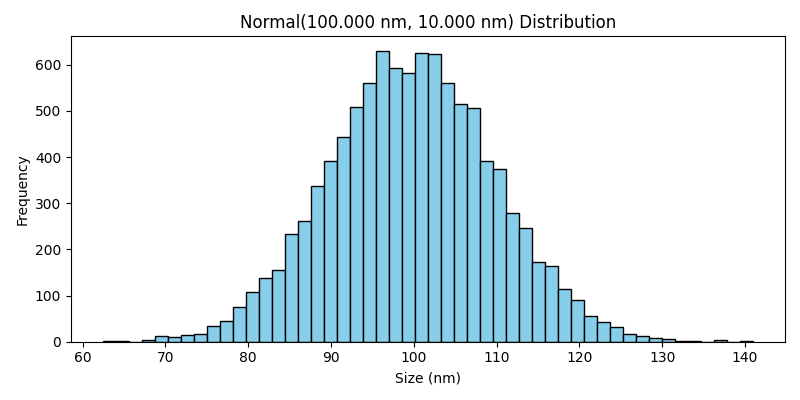
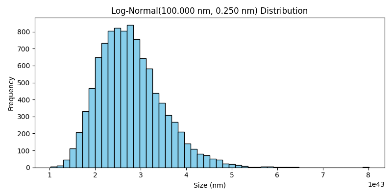
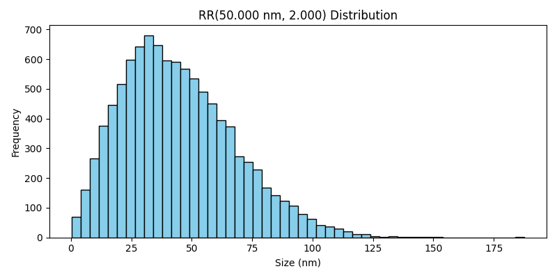
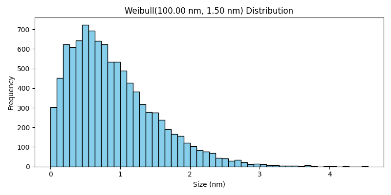
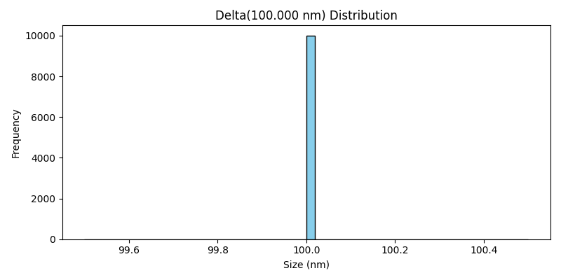
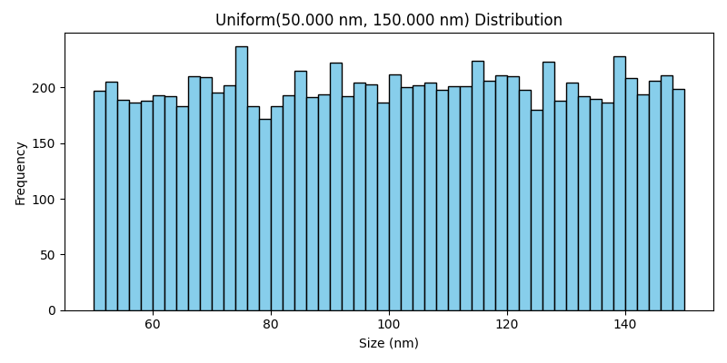

Distribution Classes#
The Distribution classes define the methods for generating particle sizes used in the simulation. These classes provide flexibility in modeling particles of varying sizes according to different statistical distributions, such as normal, log-normal, Weibull, and more. This allows for realistic simulation of particle populations with varying size characteristics.
Available Distribution Classes#
The following are the available particle size distribution classes in FlowCyPy:
Normal Distribution#
The Normal class generates particle sizes that follow a normal (Gaussian) distribution. This distribution is characterized by a symmetric bell curve, where most particles are concentrated around the mean size, with fewer particles at the extremes.
{kind=link}
- class Normal(mean, std_dev)[source]#
Bases:
BaseRepresents a normal (Gaussian) distribution for particle properties.
The normal distribution is described by its mean and standard deviation:
\[f(x) = \frac{1}{\sqrt{2 \pi \sigma^2}} \exp \left( - \frac{(x - \mu)^2}{2 \sigma^2} \right)\]where: - \(\mu\) is the mean of the distribution (average particle property). - \(\sigma\) is the standard deviation (width of the distribution). - \(x\) represents particle properties.
- Parameters:
mean (Quantity) – The mean (average) particle property in meters.
std_dev (Quantity) – The standard deviation of particle properties in meters.
- generate(n_samples)#
Generate a distribution of scatterer diameters.
- Parameters:
n_samples (Quantity)
- get_pdf(x=None, x_min=-3, x_max=3, n_samples=20)[source]#
Returns the x-values and the scaled PDF values for the normal distribution.
- Parameters:
x (np.ndarray, optional) – The input x-values (particle properties) over which to compute the PDF. If not provided, a range is generated.
x_min (float, optional) – Factor for the minimum x-value as a multiple of the standard deviation from the mean. Default is -3.
x_max (float, optional) – Factor for the maximum x-value as a multiple of the standard deviation from the mean. Default is 3.
n_samples (int, optional) – Number of points in the generated range. Default is 500.
- Returns:
The input x-values and the corresponding PDF values.
- Return type:
Tuple[np.ndarray, np.ndarray]
- mean: Quantity#
- std_dev: Quantity#
LogNormal Distribution#
The LogNormal class generates particle sizes based on a log-normal distribution. In this case, the logarithm of the particle sizes follows a normal distribution. This type of distribution is often used to model phenomena where the particle sizes are positively skewed, with a long tail towards larger sizes.
{kind=link}
- class LogNormal(mean, std_dev)[source]#
Bases:
BaseRepresents a log-normal distribution for particle properties.
The log-normal distribution is described by its mean and standard deviation of the logarithm of the values:
\[f(x) = \frac{1}{x \sigma \sqrt{2 \pi}} \exp \left( - \frac{(\ln(x) - \mu)^2}{2 \sigma^2} \right)\]where: - \(\mu\) is the mean of the natural logarithm of the particle properties. - \(\sigma\) is the standard deviation of the logarithm of particle properties.
- Parameters:
mean (Quantity) – The mean particle properties.
std_dev (Quantity) – The standard deviation of the logarithm of particle properties.
scale_factor (float, optional) – A scaling factor applied to the PDF (not the properties).
- generate(n_samples)#
Generate a distribution of scatterer diameters.
- Parameters:
n_samples (Quantity)
- get_pdf(x_min=0.9, x_max=1.1, n_samples=40)[source]#
Returns the x-values and the PDF values for the log-normal distribution.
- Parameters:
x_min (float, optional) – Factor for the minimum x-value as a multiple of the mean. Default is 0.01.
x_max (float, optional) – Factor for the maximum x-value as a multiple of the mean. Default is 5.
n_samples (int, optional) – Number of points in the generated range. Default is 500.
- Returns:
The input x-values and the corresponding PDF values.
- Return type:
Tuple[np.ndarray, np.ndarray]
- mean: Quantity#
- std_dev: Quantity#
Rosin-Rammler Distribution#
The RosinRammler class generates particle sizes using the Rosin-Rammler distribution, which is commonly used to describe the size distribution of powders and granular materials. It provides a skewed distribution where most particles are within a specific range, but some larger particles may exist.
{kind=link}
- class RosinRammler(characteristic_property, spread)[source]#
Bases:
BaseRepresents a Particle Size Distribution using the Rosin-Rammler model.
The Rosin-Rammler distribution is described by its characteristic property and spread parameter, and is used to model particle properties in systems such as powders or granular materials.
The distribution function is given by:
\[F(x) = 1 - \exp \left( - \left( \frac{x}{d} \right)^k \right)\]- where:
\(x\) is the particle property.
\(d\) is the characteristic particle property.
\(k\) is the spread parameter.
- Parameters:
characteristic_property (Quantity) – The characteristic particle property.
spread (float) – The spread parameter (shape factor).
- characteristic_property: Quantity#
- generate(n_samples)#
Generate a distribution of scatterer diameters.
- Parameters:
n_samples (Quantity)
- get_pdf(x_min=0.1, x_max=2, n_samples=100)[source]#
Returns the x-values and the scaled PDF values for the particle property distribution.
The PDF for the Rosin-Rammler distribution is derived from the CDF:
\[f(x) = \frac{k}{d} \left( \frac{x}{d} \right)^{k-1} \exp \left( - \left( \frac{x}{d} \right)^k \right)\]- Parameters:
x_min (float, optional) – Factor for the minimum x-value as a fraction of the characteristic property. Default is 0.01.
x_max (float, optional) – Factor for the maximum x-value as a multiple of the characteristic property. Default is 5.
n_samples (int, optional) – Number of points in the generated range. Default is 500.
- Returns:
The input x-values and the corresponding scaled PDF values.
- Return type:
Tuple[np.ndarray, np.ndarray]
- spread: float#
Weibull Distribution#
The Weibull class generates particle sizes according to the Weibull distribution. This distribution is flexible and can model various types of particle size distributions, ranging from light-tailed to heavy-tailed distributions, depending on the shape parameter.
{kind=link}
- class Weibull(shape, scale)[source]#
Bases:
BaseRepresents a Weibull distribution for particle properties.
The Weibull distribution is commonly used for modeling property distributions in biological systems.
- Parameters:
shape (Quantity) – The shape parameter (k), controls the skewness of the distribution.
scale (Quantity) – The scale parameter (λ), controls the spread of the distribution.
- generate(n_samples)#
Generate a distribution of scatterer diameters.
- Parameters:
n_samples (Quantity)
- get_pdf(n_samples=100)[source]#
Returns the x-values and the PDF values for the Weibull distribution.
If x is not provided, a default range of x-values is generated.
- Parameters:
x (Quantity, optional) – The input x-values (particle properties) over which to compute the PDF. If not provided, a range is generated.
n_points (int, optional) – Number of points in the generated range if x is not provided. Default is 100.
n_samples (int)
- Returns:
The input x-values and the corresponding PDF values.
- Return type:
Tuple[Quantity, np.ndarray]
- scale: Quantity#
- shape: Quantity#
Delta Distribution#
The Delta class models particle sizes as a delta function, where all particles have exactly the same size. This distribution is useful for simulations where all particles are of a fixed size, without any variation.
{kind=link}
- class Delta(position)[source]#
Bases:
BaseRepresents a delta Dirac distribution for particle properties.
In a delta Dirac distribution, all particle properties are the same, represented by the Dirac delta function:
\[f(x) = \delta(x - x_0)\]where: - \(x_0\) is the singular particle property.
- Parameters:
position (Quantity) – The particle property for the delta distribution in meters.
- generate(n_samples)#
Generate a distribution of scatterer diameters.
- Parameters:
n_samples (Quantity)
- get_pdf(x_min_factor=0.99, x_max_factor=1.01, n_samples=21)[source]#
Returns the x-values and the scaled PDF values for the singular distribution.
- Returns:
The input x-values and the corresponding scaled PDF values.
- Return type:
Tuple[Quantity, np.ndarray]
- Parameters:
x_min_factor (float)
x_max_factor (float)
n_samples (int)
- position: Quantity#
Uniform Distribution#
The Uniform class generates particle sizes that are evenly distributed between a specified lower and upper bound. This results in a flat distribution, where all particle sizes within the range are equally likely to occur.
{kind=link}
- class Uniform(lower_bound, upper_bound)[source]#
Bases:
BaseRepresents a uniform distribution for particle properties.
The uniform distribution assigns equal probability to all particle properties within a specified range:
\[f(x) = \frac{1}{b - a} \quad \text{for} \quad a \leq x \leq b\]where: - \(a\) is the lower bound of the distribution. - \(b\) is the upper bound of the distribution.
- Parameters:
lower_bound (Quantity) – The lower bound for particle properties in meters.
upper_bound (Quantity) – The upper bound for particle properties in meters.
- generate(n_samples)#
Generate a distribution of scatterer diameters.
- Parameters:
n_samples (Quantity)
- get_pdf(n_samples=100)[source]#
Returns the x-values and the PDF values for the uniform distribution.
If x is not provided, a default range of x-values is generated.
- Parameters:
n_samples (int, optional) – Number of points in the generated range if x is not provided. Default is 100.
- Returns:
The input x-values and the corresponding PDF values.
- Return type:
Tuple[Quantity, np.ndarray]
- lower_bound: Quantity#
- upper_bound: Quantity#